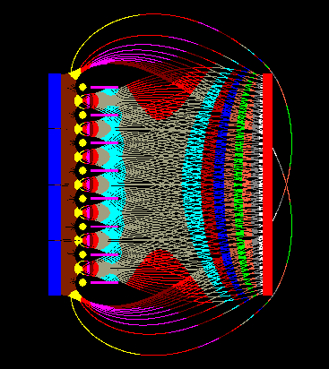
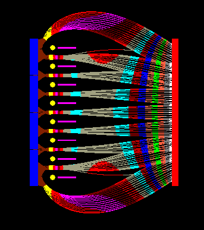
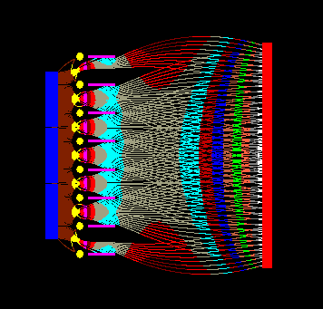
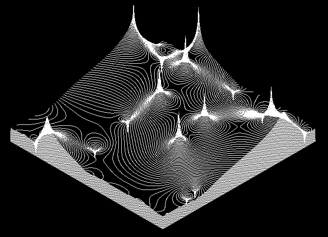

Vkuumtechnikai mrseim sorn merlt fel az a problmakr, hogy
az elektroncsvekben zem kzben bell potenciltr, ill. az
elektronoptikai eszkzkben ennek hatsra kialakul
elektronplyk egyszer mdon nem szmolhatk ki, azokat mrni
meg egyszeren lehetetlen azrt, mert azzal magba a mrend
mennyisgbe avatkoznnk be. A vonatkoz szakirodalom
tanulmnyozsa utn azonban kiderlt szmomra, hogy a problma
nem is olyan remnytelen: az elektroncsvek fejlesztsekor, az
'50-'60-as vekben ugyanis nagyon sok olyan mdszert
fejlesztettek ki, amelyek tkletesen alkalmasak voltak a
lezajl folyamatok vgeredmnynek kiszmtsra. Azta a
szmtstechnika hatalmasat fejldtt, gy ma mr lehetsg
van ezen rgi mdszerek szmtgpestsre s felgyorstsra
is. Ezen az ton elindulva ksztettem el a SimField
vgeselem alap potenciltr-szimull rendszer magjt, melynek
els eredmnyei tkletes sszhangban voltak a mrsek sorn
kapott adatokkal. Ezek utn a program hatalmas nagy fejldsen
ment keresztl, gy mra mr akr piackpes is lehetne, de mg
nem rzem igazn eladhatnak, gy inkbb szolgltatsknt
knlom az rdekldk rszre a program kpessgeit, melyek
rviden az albbiak:
- Tetszleges tervezprogramban - pl. AutoCAD-ben -
megrajzolt, majd az elterjedt DXF fjlformtumban elmentett
rajzok alapjn felptek egy tetszleges alak
elektrda-rendszert, mely egyarnt tartalmazhat egyenes s velt
alakzatokat, rcsokat, lemezeket, gyakorlatilag brmilyen
alakzatot. Lehetsg van nyitott, "vgtelen" terek modellezsre
pp gy, mint zrt, vges terletekre.
- Ezen elektrda-rendszer egyes elektrdjaihoz klnbz
potencilokat lehet rendelni, majd ezeken potencilteret lehet
szmtani vgeselem-mdszerrel. A rendszer jelenleg max.
4096*4096 pont mret potencil-terek modellezsre kpes; ennek
azonban csak sebessgbeli oka van; semmi akadlya nagyobb
felbontsnak, br a gyakorlat szerint mr ez is feleslegesen
finom.
- A vgeselem-algoritmus nem lebegpontos, hanem specilis
mdon fixpontos szmtssal dolgozik, ennek kvetkeztben az
itercik sorn nem halmozdnak a kerektsi hibk. A ciklusok
szmnak nvelsvel az elrhet pontossg vg nlkl nvekszik,
gy 1% krli "gyors" rszeredmnyeket is lehet kapni, de akr
0,1% vagy 0,01% pontossg vgeredmny is kiszmolhat.
- A kiszmolt potenciltr szintvonalas brzolsa viszont mr
ismt lebegpontos, gy a vgeselem hl 4096*4096 felbontsnl
sokkal finomabb felbonts grbket kapunk. A kiszmolt
szintvonalas potenciltr krhet skban; de krhet trbeli
brzolsban is, amikor a potenciltr vltozsa vizulisan is
knnyen kvethet. A szintvonalas grbe is AutoCAD DXF
formtumban kszl el, ami gy rtehet az eredeti, mretezett
rajzra, s egytt is szemllhetk.
- A SimField rendszer msik kirtkel szoftvere a
katdnak kijellt objektumbl adott irny s kezdsebessg
elektronokat kpes "emittlni", majd a potenciltr hatsra
bekvetkez sebessg- s plyavltozsokat szintn nagyon finom
felbontsban brzolni AutoCAD DXF formtumban. Az elektronok
sebessgvltozsa a plyk kisznezsvel mg vizulisabb
tehet. Az elektronplyk gyszintn rtehetk az eredeti,
mretezett rajzra, s azzal egytt is szemllhet.
- A rendszer elvileg alkalmas elektrosztatikus ill. mgneses
terek szimulcijra is, ill. az elektronplyk mgneses trben
bekvetkez elhajlsa is szmolhat, ha van mrssel (lsd a 2
ill. 3 dimenzis mgneses tr szkenneremet a Mrstechnika, vkuumtechnika linknl)
vagy szimulcival meghatrozott mgneses tr. Jelenleg ezen
jabb rutinok fejlesztse folyamatban van, ezrt vrok olyan
megrendelket, akik szvesen vennnek rszt a rendszer tovbbi
fejlesztsben, kiprblsban.
- A kidolgozott vgeselem-algoritmus kiterjeszthet valdi 3
dimenzis szimulcikra is; az ehhez szksges hardver- ill.
szoftverkrnyezet is meg van mr tervezve, azonban mg nem
kerltem kapcsolatba olyan sszetett problmval, amely ilyen
komoly rendszer kiptst szksgess tette volna. Ha azonban
ilyen igny felmerlne, a CellComputer Kft-vel kzsen vllaljuk olyan
specilis cellaszmtgpekbl ll, tbb szz vagy ezer
processzoros szuperszmtgpek sszelltst, amelyek kpesek
akr vals idben is ilyen szimulcik elvgzsre.
Mintk a SimFieldhez:
Tetrda-rendszer elektrongy ltal ellltott
elektronsugarak. A kk sznnel jellt ngyzetek a katdok, a
srga krk a vezrlrcsot, a rzsaszn vonalak a
gyorstrcsot jellik, mg a piros tglalap az and. A
sznjtsz vonalak az egyes elektronplyk, melyek az adott
pontban fennll potenciltrnek megfelelen vltoztatjk az
irnyukat s a sebessgket; ez utbbit jellik a klnfle
sznek. A barna a legalacsonyabb, a fehr a legmagasabb, 50eV-os
sebessget jelli. Mivel az and s a katd tlsgosan tvol van
egymstl, s kicsi kztk a feszltsg, ezrt az elektronok egy
potencilvlgybe kerlnek, ahol lelassulnak, majd az and
kzelbe rve jra felgyorsulnak. Ezt is jl lehet ltni a
sznek vltozsbl. A gyorstrcs +25V-os, az and +50V-os
potencilon van. A vezrlrcsra adott negatv feszltsggel
lehet az elektrongyt lezrni. Ahogy az a szimulcibl is
ltszik, a katd tl szles a rcshoz kpest, ezrt mg lezrt
vezrlrcs esetn is van katdram, ami nem j. A jobb als
sarokban lthat elrendezsben ezrt a katd meg lett rvidtve,
gy mr tkletesen lehet az elektrongyt a vezrlrccsal
szablyozni.
|

1. bra: -2V-os vezrlrcs-feszltsgnl mg teljesen nyitva
van a rcs, gy a teljes katdram eljut az andra. |

2. bra: -3,5V-os vezrlrcs-feszltsgnl a rcs mr csak
flig van nyitva, cskken az elektronnyalb mrete. |
|

3. bra: -5V-os vezrlrcs-feszltsgnl a rcs elvileg mr
zrva van, nem folyhatna ram, de a rossz katd-rcs konstrukci
miatt mgis vannak kbor elektronnyalbok. |

4. bra: A javtott konstrukci mr mentes eldje hibjtl;
mr rnzsre ltszik, hogy jl mkdik a vezrlrcs-funkci. |
|

5. bra: A javtott konstrukci als szle kinagytva, hogy
szpen lehessen ltni az egyes elektronplykat. |
|

6. bra: A javtott konstrukci katdjnak s rcsainak
teljes potenciltere szintvonalas brzolsban. |
|

|
 |
|
7-8. bra: Tesztclokra kszlt trbeli potenciltr-szmtsok.
nmagban semmire sem j, de nagyon szp brk, klnsen az eredeti,
A/4-es mretben, 300 dpi-s felbontssal! |